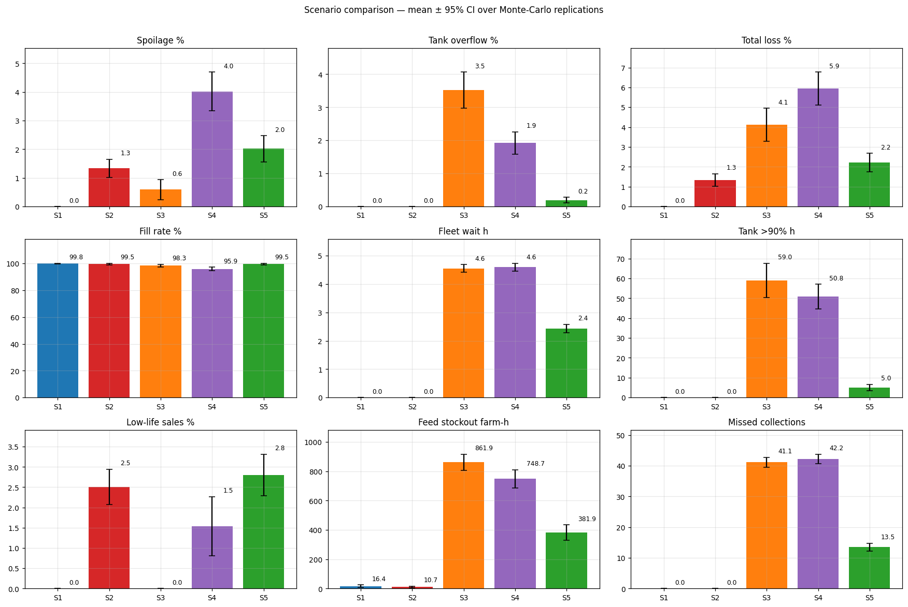
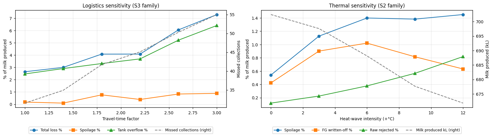
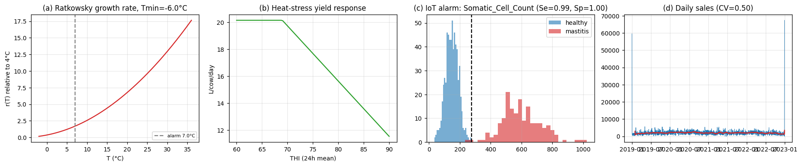
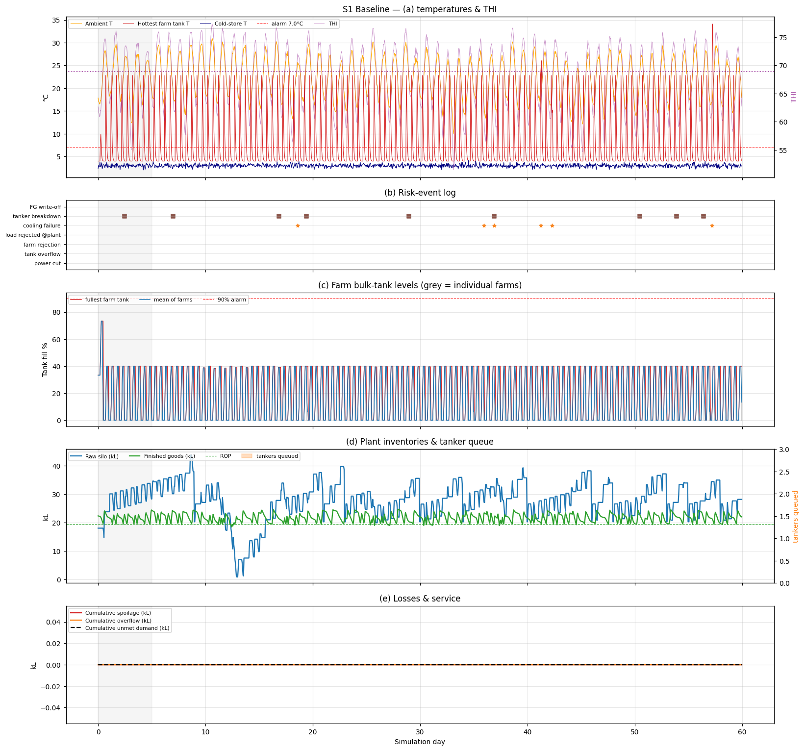
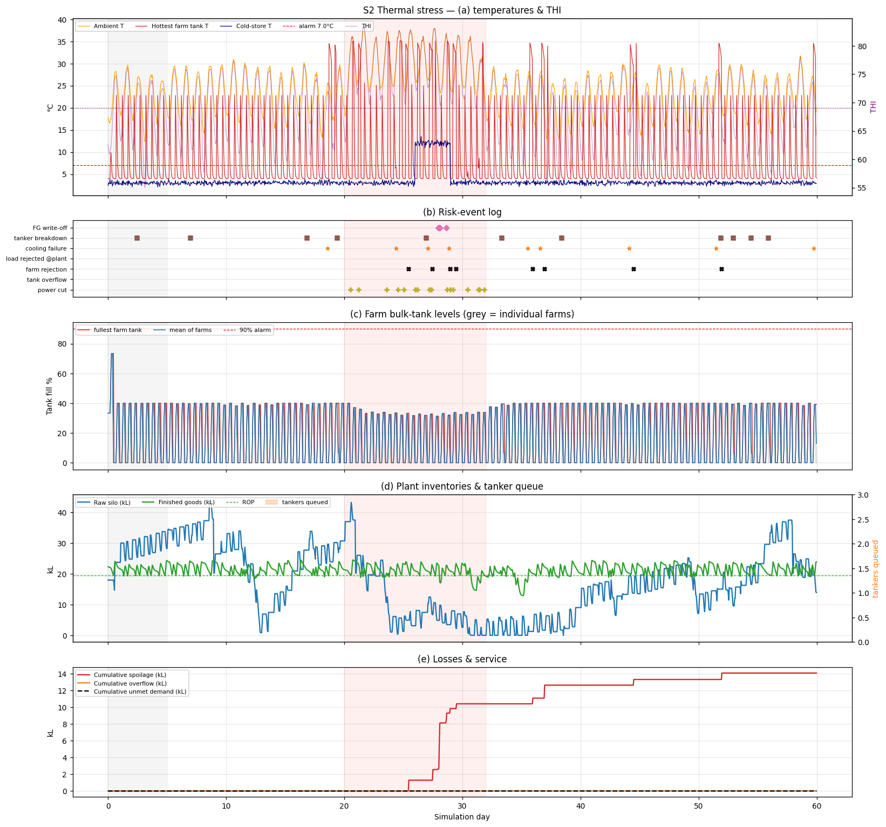
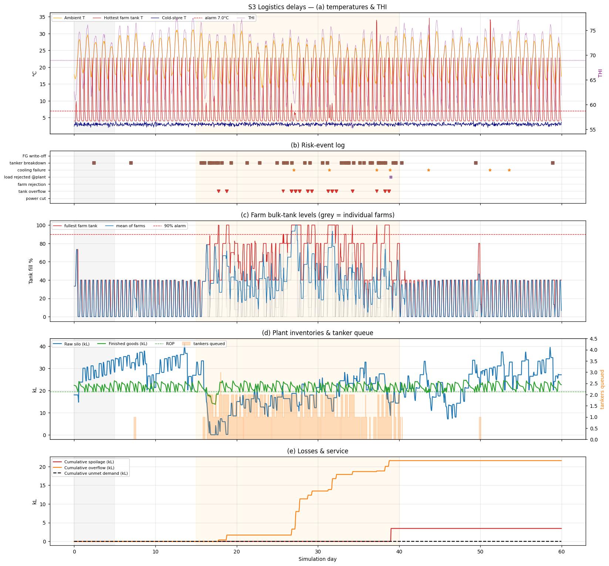
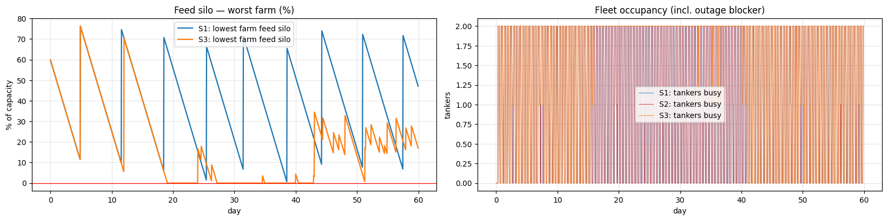

What-If Scenario Benchmark (Mean across 20 Monte-Carlo Replications)
| Scenario | Description & Stress Injected | Total Loss % | Spoilage % | Tank Overflow % | Customer Fill Rate % | Fleet Wait (h) | Milk Produced |
|---|---|---|---|---|---|---|---|
| S1 Baseline | Nominal steady-state operations (ambient mean 22°C, nominal transit jitter) | 0.00% | 0.00% | 0.00% | 99.82% | 0.00 h | 702.8 kL |
| S2 Thermal Stress | Extreme summer heatwave (+8°C, 14 days), grid outages (20.9/run), chiller trips | 1.33% | 1.33% | 0.00% | 99.51% | 0.00 h | 678.6 kL |
| S3 Logistics Delays | Transit travel delays (×2.5), breakdown rate (×4.0), road bottlenecks | 4.11% | 0.59% | 3.52% | 98.30% | 4.55 h | 683.8 kL |
| S4 Compound Crisis | Simultaneous S2 (Heatwave + Outages) and S3 (Fleet Delays + Feed Depletion) | 5.94% | 4.02% | 1.92% | 95.90% | 4.60 h | 663.7 kL |
| S5 Mitigated Policy | Proactive tanker dispatch (at 70% tank fill), auxiliary standby power, reserve fleet | 2.22% (-63%) | 2.02% | 0.20% | 99.49% | 2.43 h | 671.6 kL |
Cross-Scenario Evaluation & Systemic Breakpoint Analysis

Figure 6: Cross-Scenario KPI Comparison Matrix (95% CI)
Multi-dimensional performance evaluation showing systemic losses, bacterial spoilage, customer fill rate, and tank overflow across all 5 operational conditions.

Figure 7: Systemic Breakpoint Identification (Sensitivity Sweeps)
(a) Transport delay multiplier sweep from 1.0× to 3.0× showing rapid overflow inflection at 2.6×. (b) Ambient heatwave sweep showing spoilage doubling at +3°C.
High-Resolution Simulation Chronograms

Figure 1: Empirical Data Calibration & Biophysical Models
(a) Ratkowsky square-root psychrotrophic bacterial growth rate. (b) THI-dependent lactation depression regression. (c) IoT Somatic Cell Count Youden J alerting. (d) Sales seasonality.

Figure 2: Scenario S1 Baseline Operations (Zero Waste)
Nominal steady-state conditions: continuous milk collection keeps farm tanks below 30% fill, zero tank overflows, and bacterial equivalent age well under 24 hours.

Figure 3: Scenario S2 Extreme Thermal Heatwave
Impact of a +8°C ambient heatwave with power outages: raw milk bacterial aging spikes past 72h limit, causing batch rejections at plant gates and latent shelf-life degradation.

Figure 4: Scenario S3 Fleet Bottlenecks & Tanker Reception Queuing
Long transit delays and road breakdowns cause collection rounds to fail, overflowing farm bulk coolers (3.52% overflow waste) and idling plant intake bays.

Figure 5: Farm Feed Silo Stocks & Tanker Reception Queue Timeline
Demonstrating feed supply decoupling: road delays deplete farm forage inventories, severely depressing lactation curves unless decentralized safety buffers exist.
Core Operational Insights for Baladna Adrar
Non-Linear Compound Synergies
- Synergistic Loss Multiplier: In isolation, S2 (heat) caused 1.33% loss and S3 (delays) caused 4.11% loss (sum = 5.44%). Concurrently in S4, total loss reached 5.94%.
- Physical Mechanism: Ambient heat accelerates microbial kinetics exponentially ($r \propto (T - T_{min})^2$), while logistics delays trap raw milk in holding tanks until the 72h rejection limit is breached.
- Latent Perishability Risk: 2.5% of sales in S2 reached retail with <50% shelf-life remaining, transferring silent risk to consumers.
Proactive Resilience Policies (S5)
- Dynamic Dispatch vs Rigid Calendars: Triggering tanker collections at 70% bulk tank fill slashes farm overflows from 3.52% to 0.20%.
- The Safety Stock Paradox: Inflating static inventory buffers during cold-store breakdowns increased spoilage (0.59% → 1.38%). Buffer sizing must dynamically downscale upon chiller failure alerts.
- Mobile Cooling Generators: Deploying standby auxiliary power to large farm clusters prevents total batch dumping during summer grid curtailments.
Reproducibility & Execution Commands
The entire digital twin is reproducible across local environments and cloud notebooks using Python and SimPy:
💡 Kaggle Execution: No GPU required. The simulation runs on standard Kaggle CPU in ~2 minutes under the verified notebook: greenalgeria/dairy-supply-chain-digital-twin-final.